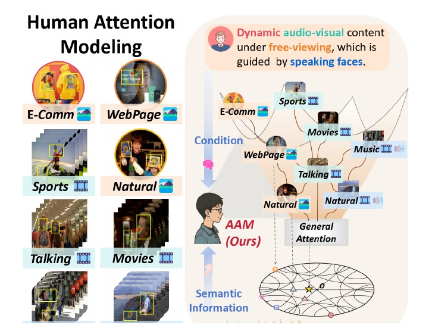
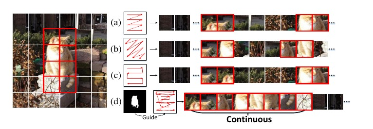

2025 — Present
Sichuan University
Direct Ph.D. · Computer Science
MULTIMODAL FOUNDATION MODELS · MLLMs
Ph.D. Student in Computer Science · Sichuan University
I work on unified multimodal foundation models and multimodal large language models (MLLMs).
PROFILE
I am a direct Ph.D. student at the College of Computer Science, Sichuan University. I received my B.Eng. in Computer Science and Technology from Chongqing University.
My research develops from unified multimodal foundation models to multimodal large language models, with current work on multimodal perception and reasoning.
Direct Ph.D. · Computer Science
B.Eng. · Computer Science and Technology
UPDATES
New preprints: Two works on MLLM perception and high-resolution visual reasoning are now available on arXiv.
ICML 2026: Attend to Anything accepted at ICML 2026.
Samba+: Extended unified Mamba framework released as a public preprint with code.
CVPR 2025 Highlight: The conference version of Samba was selected as a Highlight paper.
TRAJECTORY
Building unified models that share representations across heterogeneous modalities, scenes, and tasks.
AAM · Samba+Understanding and improving how MLLMs perceive, localize, and reason over complex visual information.
Perception · Localization · High-Resolution VQASELECTED WORK

A unified foundation model for image, video, and audio-visual human attention. It models general-to-specific cognitive entailment in hyperbolic space and temporal attention with Fokker–Planck dynamics.

A pure Mamba framework for general salient object detection, with spatial-neighbor scanning and a unified multimodal extension for arbitrary modalities and continual adaptation.
Shows that fine-grained visual evidence can emerge in intermediate MLLM layers but become diluted later, and routes question-relevant evidence through a single visual pass.
Diagnoses the gap between MLLM localization and complete object-region understanding, and reframes zero-shot SOD as protocol-aligned foreground organization.
ONGOING RESEARCH
OPEN SOURCE
Official implementation of the ICML 2026 unified human attention foundation model.
Code, models, and evaluation utilities for the unified Mamba-based SOD framework.
RECOGNITION
CVPR Workshop Challenge — Team Lead, Silver Medal
National Undergraduate Innovation Project — Excellent Completion, Project Lead
Zhu Jingwen Scholarship — Top 1%
China Internet+ Innovation & Entrepreneurship Competition — Provincial Gold Award
CONTACT